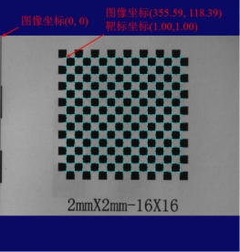

图像坐标反投影工具用于根据相机的靶标标定结果，将图像坐标反投影计算得到对应的靶标坐标。
| 分类 | 参数名称 | 参数描述 |
|---|---|---|
| 属性窗口 | 图像坐标类型 | 分为畸变图像坐标与校正图像坐标。畸变图像坐标，指未经过校正的原图像坐标；校正图像坐标，指校正后的图像坐标（目前未有该应用场景，一般不选）。 |
| 图像窗口 | 无 | 无 |
| 数据链 | 图像坐标向量 | 输入待反投影的原图像坐标向量 |
| 相机标定结果 | 相机的靶标标定结果 | |
| 局部靶标与全局靶标位置关系 | 局部靶标与全局靶标位置关系，用于计算输出的反投影全局靶标坐标；若不链接，则表示局部靶标和全局靶标结果坐标一致。 | |
| 高级界面 | 无 | 无 |
| 分类 | 参数名称 | 参数描述 |
|---|---|---|
| 监视窗口 | 全局靶标坐标向量 | 反投影的全局靶标坐标向量结果 |
| 执行结果 | 显示工具执行结果，执行成功显示“OK”，执行失败显示“NG”，同监视窗口的执行结果参数。 | |
| 数据链 | 全局靶标坐标向量 | 反投影的全局靶标坐标向量结果 |
该参数反映的是局部靶标与全局靶标在X、Y方向上的偏差量。例如，局部靶标与全局靶标位置关系取值为(0.00, 0.00)时，左上角的角点的靶标坐标为(0.00, 0.00)；而局部靶标与全局靶标位置关系取值为(1.00, 1.00)时，左上角的角点的靶标坐标为(1.00, 1.00)，其它角点以此类推，如图1所示。

无
参见“\Samples\图像坐标反投影工具.gvp”。